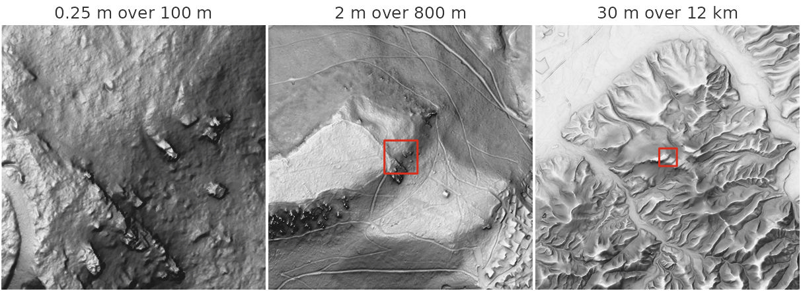
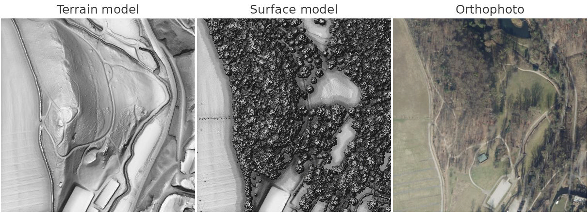
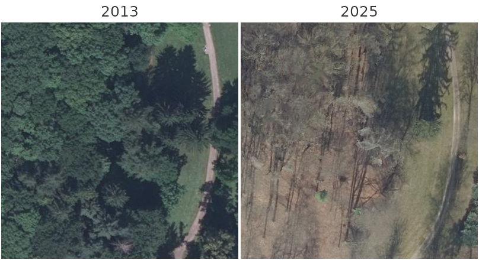
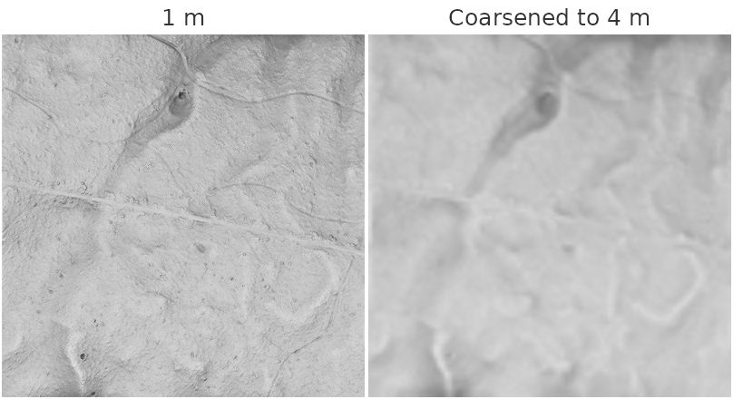

Every function in this package takes the path to an elevation raster,
so any terrain model you already have works. Two functions fetch one for
you: rvt_data_mapterhorn() for anywhere in the world, and
rvt_data_lgln() for Lower Saxony, where it also offers a
surface model and orthophotos. Neither downloads anything until the data
is read, and then only the part that is needed.
Distances in this package are in metres, never pixels. Both functions therefore return data in a coordinate system measured in metres, and your own data needs one too.
Terrain for anywhere: rvt_data_mapterhorn()
Mapterhorn combines open elevation data into one global dataset. The 30 m Copernicus model covers the whole world, and national LiDAR terrain models take over where they have been published: 1 m across Germany, Austria and Norway, 0.5 m in Switzerland, 0.25 m in parts of Baden-Württemberg, and many more.
Give a point, and you get a square around it, size
metres across. Give an extent, and you get exactly that area. Here is
one place, the Battert crags above Baden-Baden, at three scales, each
shown with rvt_vat(). Each panel is 400 × 400 pixels, and
each outline marks the area of the panel before it.
battert <- c(8.2618, 48.7788) # longitude, latitude
fine <- rvt_data_mapterhorn(battert, size = 100) # finest: 0.25 m
medium <- rvt_data_mapterhorn(battert, size = 800, res = 2)
coarse <- rvt_data_mapterhorn(battert, size = 12000, res = 30)
# VAT searches 10 and 20 m around each cell, less than one 30 m cell,
# so the coarse panel searches further
wide <- list(modifyList(rvt_preset_general, list(reach = 300)),
modifyList(rvt_preset_flat, list(reach = 600)))
outline <- function(inner) { # the area of `inner`
b <- methods::new(gdalraster::GDALRaster, inner)$bbox()
rect(b[1], b[2], b[3], b[4], border = "#d7301f", lwd = 2)
}
rvt_vat(fine) |> rvt_plot(main = "0.25 m over 100 m", max_dim = 400)
rvt_vat(medium) |> rvt_plot(main = "2 m over 800 m", max_dim = 400)
outline(fine)
rvt_vat(coarse, presets = wide) |> rvt_plot(main = "30 m over 12 km", max_dim = 400)
outline(medium)
At 0.25 m single sandstone blocks stand out on the forested slope. At 2 m the line of crags appears along the ridge, with forest roads and skid trails winding around it, and at 30 m the ridge is one of many among the valleys at the western edge of the Black Forest.
Which data covers a place
rvt_data_mapterhorn_sources() lists the sources
available for an area, finest first, without fetching any elevation
data:
rvt_data_mapterhorn_sources(battert)[, c("source", "resolution", "license")]
#> source resolution license
#> 1 debw025 0.25 Datenlizenz Deutschland - Namensnennung - Version 2.0
#> 2 debw 1.00 Datenlizenz Deutschland - Namensnennung - Version 2.0
#> 3 glo30 30.00 COPERNICUS full, free and open licenseResolution
Without res, you get the finest source available. A
larger res coarsens the data, and a smaller one is refused,
because the result could only be interpolated:
rvt_data_mapterhorn(battert, size = 100, res = 0.1)
#> Error:
#> ! The finest Mapterhorn data here is 0.25 m (Baden-Württemberg DGM ALS_3), so `res = 0.1` would only interpolate. Use res >= 0.25.Where an area crosses the edge of a detailed survey, the coarser data fills in wherever the finer data stops, so the result has no holes.
Coordinate system
Mapterhorn stores its tiles in Web Mercator, whose map units are
stretched by 1/cos(latitude), 1.6 times at 51 degrees north. That would
break every distance in this package, so the data is always reprojected:
by default to the UTM zone of the area’s centre, or to any coordinate
system in metres you pass as crs. Use the national system
when the data has to line up with other rasters, for example
crs = 25832 in Germany.
gdalraster::srs_find_epsg(methods::new(gdalraster::GDALRaster, fine)$getProjection())
#> [1] "EPSG:32632"Credit
The data comes from many producers, each under its own open licence. The sources used are printed the first time each is fetched in a session, and https://mapterhorn.com/attribution lists the full terms.
Lower Saxony in detail: rvt_data_lgln()
The state survey authority of Lower Saxony (LGLN) publishes three
products for the whole state, and rvt_data_lgln() reads all
of them:
| product | what | native grid |
|---|---|---|
"dtm" |
terrain model, the bare ground | 1 m |
"dsm" |
surface model, ground plus trees and buildings | 1 m |
"rgb" |
orthophoto | 0.2 m |
The data comes in the survey’s own coordinate system, ETRS89 / UTM
zone 32N (EPSG:25832), and is never reprojected. A point returns the 1
km tile it lies in; an extent, here a 400 m square in EPSG:25832,
returns exactly that area. Fetching the orthophoto at
res = 1 puts it on the same grid as the terrain, so the
three line up cell for cell.
area <- sf::st_bbox(c(xmin = 565300, ymin = 5720300, xmax = 565700, ymax = 5720700),
crs = 25832) # beside Burg Hardenberg
dtm <- rvt_data_lgln(area, "dtm")
dsm <- rvt_data_lgln(area, "dsm")
rgb <- rvt_data_lgln(area, "rgb", year = 2025, res = 1)
rvt_vat(dtm) |> rvt_plot(main = "Terrain model", max_dim = 400)
rvt_vat(dsm) |> rvt_plot(main = "Surface model", max_dim = 400)
rvt_plot(rgb, main = "Orthophoto", max_dim = 400,
minmax_def = c(0, 0, 0, 255, 255, 255))
The terrain model shows the shape of the ground, even beneath the forest; the surface model adds the tree crowns and buildings standing on it.
Flight years
The terrain and surface models usually exist for one year, but
orthophotos are flown every few years.
rvt_data_lgln_years() lists them without fetching any
data:
rvt_data_lgln_years(area, "rgb")
#> product year first_date last_date tiles covers
#> 1 rgb 2013 2013-06-18 2013-06-18 1 TRUE
#> 2 rgb 2016 2016-03-17 2016-03-17 1 TRUE
#> 3 rgb 2019 2019-04-01 2019-04-01 1 TRUE
#> 4 rgb 2022 2022-03-13 2022-03-13 1 TRUE
#> 5 rgb 2025 2025-03-08 2025-03-08 1 TRUEWithout year, the most recent year covering the whole
area is used. The comparison below is an 80 m square at the orthophoto’s
native 0.2 m, so each panel shows its own 400 × 400 pixels. Flights
happen in different seasons: 2013 was flown in June, with the trees in
leaf, and 2025 in March, without.
detail <- sf::st_bbox(c(xmin = 565460, ymin = 5720460, xmax = 565540, ymax = 5720540),
crs = 25832)
for (year in c(2013, 2025)) {
rvt_data_lgln(detail, "rgb", year = year) |>
rvt_plot(main = year, max_dim = 400, minmax_def = c(0, 0, 0, 255, 255, 255))
}
Streaming and downloading
Both functions return the path to a small virtual raster by default. It points at the remote files, and data moves only when something reads it, so asking for an area costs nothing until you compute on it.
With download = TRUE a Cloud-Optimized GeoTIFF is stored
in your user cache instead, and later calls for the same area are served
from there. Use refresh = TRUE to fetch it again.
dtm <- rvt_data_mapterhorn(battert, size = 2000, download = TRUE)
tools::R_user_dir("rvtr", "cache") # where it is keptDownload first when you will compute several metrics over a large area. Each metric reads the data in many small windows, and over the network that is far slower than reading a local file.
Before anything is read, both functions estimate the download and
stop above max_mb, 500 MB by default:
rvt_data_mapterhorn(c(8.5, 48.2, 9.5, 48.6)) # 75 x 45 km at 0.25 m
#> Error:
#> ! Reading this area would fetch about 345,694 Mapterhorn tiles, an estimated 51854 MB, above `max_mb = 500`. Reduce the area, use a coarser `res`, or raise `max_mb` if you mean it.Your own data
Any raster GDAL can read works, as long as its coordinate system is
measured in metres. A terra SpatRaster can be passed
instead of a path: one read from a file is used as it lies, and one
terra computed in memory is written to a temporary GeoTIFF first.
Reproject a raster in degrees before using it:
gdalraster::warp("dem_wgs84.tif", "dem_utm.tif", t_srs = "EPSG:25832")Terrain often comes as many tiles. Pass them all at once; they are read as one seamless raster, so results show no edges at the tile boundaries:
tiles <- list.files("dtm_tiles", "\\.tif$", full.names = TRUE)
tiles |> rvt_svf("svf.tif")rvt_fill() interpolates across holes in the data. Fill
before computing anything: slope and curvature lose a ring of cells
around every hole, and the horizon-based metrics see straight through
one.
rvt_resample() coarsens a raster, to study terrain at a
broader scale or to make a large area affordable. It refuses to make a
raster finer, since that could only interpolate. Here part of the
bundled sample tile is shown at its own 1 m and coarsened to 4 m, where
the small bumps and faint paths disappear:
dem <- system.file("extdata", "dtm1.tif", package = "rvtr")
part <- tempfile(fileext = ".tif")
gdalraster::translate(dem, part, cl_arg = c("-srcwin", 300, 300, 400, 400), quiet = TRUE)
rvt_vat(part) |> rvt_plot(main = "1 m", max_dim = 400, minmax_def = c(0, 1))
rvt_resample(part, 4) |> rvt_vat() |>
rvt_plot(main = "Coarsened to 4 m", max_dim = 400, minmax_def = c(0, 1))
#> `reach`: 10 snapped to 3 cells = 12 (cell size 4)